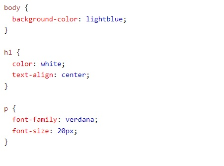

CSS is the language we use to style a Web page.
CSS is used to define styles for your web pages, including the design, layout and variations in display for different devices and screen sizes.
HTML was NEVER intended to contain tags for formatting a web page!
When tags like font, and color attributes were added to the HTML 3.2 specification, it started a nightmare for web developers. Development of large websites, where fonts and color information were added to every single page, became a long and expensive process.
To solve this problem, the World Wide Web Consortium (W3C) created CSS.
The style definitions are normally saved in external .css files.
With an external stylesheet file, you can change the look of an entire website by changing just one file!